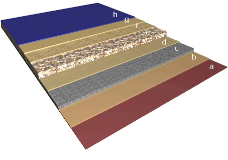

Уреплен
«Уреплен» - это жидкий состав на основе полиуретановых эластомеров. После нанесения на подготовленную поверхность полимеризуется в результате химического взаимодействия. Пропитывая поверхностный слой обрабатываемого материала, создает прочное защитное покрытие. Работает в диапазоне температур от -75 до +100°С.
«Уреплен» является модифицированным продуктом ВПК. Долгое время применялся в оборонной промышленности. Имеет уже более 20-летний срок применения в гражданском строительстве и других отраслях.
«Уреплен» - экологически чистый, пожаро- и взрывобезопасный материал.
Обладает высочайшей износостойкостью, недостижимой для покрытий на основе других каучуков. Это свойство предполагает использование материала в качестве покрытий, работающих в условиях гидроэрозии, воздействия абразивных частиц, высоких и низких температур, агрессивных сред.
Преимущества:
- Уникальная износостойкость (в 6 раз выше, чем у гранита!)
- Долговечность и надежность покрытия (свыше 25 лет)
- Высокие гидроизоляционные свойства (не менее 20 Мпа)
- Трещиностойкость
- Атмосферо-, морозо-, абразиво-, химстойкость
- Нетоксичность
- Технологичность
- Экономическая эффективность
«Уреплен» - двухкомпонентный состав, наносится любым лакокрасочным способом: кистью, валиком, распылителем; в модификации «Уреплен - ПОЛ» - наливным способом.
Время жизни раствора составляет 40-60 минут. Наносится слоями толщиной от 40-120 мкм за один слой. В качестве наполнителей могут применяться различные материалы, например: кварцевый песок, кристобалит, микробарит, редоксайд, сурик, кварцевая мука. Для армирования можно использовать стеклоткань или стеклохолст. «Уреплен» можно колеровать пигментными пастами для полиуретанов, концентратами пигментов и сухими пигментами согласно инструкции по введению цветных пигментов.
Полное отвержение материала «Уреплен» происходит за 7-14 суток, после чего физико-механические показатели достигают максимальных значений. Материал высыхает «на отлип» за 2-6 часов (при температуре +20°С) и становится вполне твердым через сутки - по нему можно ходить. При уменьшении температуры время высыхания увеличивается (см. таблицу расчета времени промежуточного высыхания слоев).
|
Непревзойденные физико-механические характеристики и свойства состава «УРЕПЛЕН» делают его поистине универсальным, т.е. пригодным для применения во многих отраслях промышленности и строительстве для решения самых различных задач.
Способы нанесения материала, не требующих применения высоких технологий и специального оборудования, ремонтопригодность допускают его многократное использование.
«УРЕПЛЕН - Универсал» имеет более чем 20-летний опыт применения в военно-промышленном комплексе и гражданском строительстве.
Сферы применения:
|
антикоррозионная защита металлических и железобетонных конструкций промышленных, гражданских и гидротехнических сооружений, трубопроводов |
защитные покрытия внутренних поверхностей в системе водоочистки и водосбора; для водопроводов питьевого водоснабжения (холодного и горячего) |
гидроизоляция подземных сооружений, фундаментов, тоннелей; резервуаров, бассейнов, канализационных коллекторов, очистных сооружений |
|
«антиобрастайка» защита днищ судов, металлических палуб, цистерн; защита внутренних поверхностей сухогрузных и нефтеналивных судов декоративное защитное покрытие (наливные полы) |
защитное покрытие от абразивного и антиэррозионного износа рабочих турбин ГЭС; гидроциклонов и крыльчаток насосов; лопаток пескоструйных и дробеструйных аппаратов; агрегатов объемно-вибрационной обработки |
покрытие внутренних поверхностей емкостей для хранения и приготовления овощных, фруктовых соков, винопродукции, спиртосодержащих продуктов, пива, солода, кисломолочных, мясных продуктов и консервов |
|
защитное покрытие бетонных и металлических емкостей для хранения ГСМ, нефтепродуктов |
защита механизмов и трубопроводов нефтеперерабатывающего оборудования |
защита бетонных труб, градирен, мостов |
|
химически стойкое покрытие фильтров очистки воды, очистных сооружений |
резервуары конденсата, хранилища материалов с кислотно-щелочной основой |
износостойкие покрытия лент транспортеров |
Подготовка поверхности и технология работ производятся согласно стандартных требований ISO, ГОСТ и СНиП, для каждой сферы применения соответственно.
- устройство эксплуатируемой кровли
- ремонт рулонной кровли
- гидроизоляция стыков и швов
Эластичность, высокая прочность и гидроизоляционные свойства материала прекрасно проявляются при создании бесшовных кровельных покрытий с длительным сроком эксплуатации без ремонта (свыше 25 лет) и при устройстве эксплуатируемой кровли любой геометрии. При работах не требуется применение открытого пламени. Композиция наносится лакокрасочным способом. В отличие от битумных материалов не боится бактериальной агрессии.
«Уреплен - Жидкая Кровля» особенно эффективен при ремонте и восстановлении рулонных кровельных материалов. Удалять старое покрытие не требуется! Просто нанесите материал валиком, кистью или распылителем на существующее покрытие и создайте надежную и прочную гидроизоляционную мембрану.
Для упрочнения и создания нескользящей поверхности применяется стеклоткань и кварцевый песок, что позволяет также дополнительно упрочнить поверхностный слой. Рекомендуем добавлять в материал алюминиевую пудру для придания кровли светоотражающих свойств.
Материал можно колеровать практически в любой цвет для создания эксклюзивных кровельных покрытий.
Подготовка поверхности:
Поверхность очищается от посторонних включений, грязи, мусора, песка, воды. Разрушенные, разрезанные и разорванные участки покрытия подлежат локальному ремонту. Вздутия, наплывы необходимо разрезать, просушить и проклеить грунтовочным раствором «Уреплен - Жидкая Кровля»; восстановить слой подложки (цементно-песчаная стяжка, слой теплоизоляции, пароизоляции и пр.).
Далее произвести обеспыливание и обезжиривание поверхности. Для этого применяется ацетон, этилацетат, бензин. Не допускается применение уайт-спирита, нефраса, сольвента!
Технология работ:
1. «Уреплен - Жидкая Кровля» готовится на месте работы путем тщательного перемешивания компонента А (преполимер) и компонента Б (отвердитель), взятых в объемном соотношении 1:1. В случае кристаллизации компонента А, емкость с этим компонентом следует разогреть до температуры +50 - 60
2. Вязкость композиции «Уреплен - Жидкая Кровля» может быть понижена до требуемой путем введения ацетона или этилацетата (в соответствии с рекомендациями завода-изготовителя), но не более 30% от массы всей композиции.
3. Приготовление композиции следует производить непосредственно перед нанесением на поверхность. Время жизнеспособности композиции от момента смешивания составляет около 40 минут и может изменяться в зависимости от температуры окружающей среды.
4. Наносить при температуре не ниже +5°С.
5. Готовая смесь наносится несколькими слоями любым лакокрасочным способом. Количество слоев и общая толщина покрытия зависит от его назначения.
6. Каждый последующий слой композиции «Уреплен - Жидкая Кровля» наносится на предыдущий по достижению им отсутствия липкости (2 - 6 часов), но не позднее, чем через 24 часа. Для более быстрого отверждения нанесенного слоя его поверхность необходимо вводить в состав композиции ускоритель (1-2%), либо обдувать сухим горячим воздухом.
7. Не допускается попадание влаги на обработанную поверхность в течение 2-3 часов непосредственно после нанесения.
8. Для придания повышенной прочности, наносимые промежуточные слои покрытия «Уреплен - Жидкая Кровля» армируются песком. Армирование допускается сухим просеянным песком (кварцевым или речным) фракции 0,3-1,0 мм. Песок наносится методом напыления или посева в зависимости от ориентации поверхности в пространстве. Нанесение песка производится сплошным ровным слоем. Остатки не прилипшего песка удаляются в дальнейшем мягкой щеткой или методом обдува воздухом.
Поверх последнего армированного слоя наносятся два дополнительных слоя композиции «Уреплен - Жидкая Кровля».
|

Схема армирования: 1 слой - грунтовочный (с добавлением ацетона 15%); после высыхания наносят 2-й слой и укладывают стекловолокно; после высыхания наносят 3-й слой и посыпают его песком; затем, после высыхания наносят 4-6 финишные слои (которые могут колероваться).
Изготовитель рекомендует добавлять алюминиевую пудру (4-5%) в финишные слои для получения светоотражающей поверхности.
Не допускается воздействие механических или химических нагрузок на готовую («свежую») поверхность в течение 24 часов. Оценка прочности и адгезии нанесенного слоя производится не ранее, чем через 14 суток после выполнения работ.
Расход:
Расход при покрытии в 6 слоёв составляет в среднем 1,2 л на 1 м² поверхности.
Условия хранения:
Хранить при температуре от 0 до +30°С в герметично закрытой таре в течении 12 месяцев. Образующаяся при хранении на поверхности компонента А пленка легко удаляется механическим способом.
Техника безопасности:
Исполнитель работ при нанесении покрытия «Уреплен - Жидкая Кровля» должен пользоваться индивидуальными средствами защиты (респиратор, спецодежда, защитные очки, перчатки и пр.)
Рекомендуемый инструмент:
Валик натуральный или полиамидный со средним ворсом, кисть флейцевая, установка безвоздушного распыления, краскопульт.
«Уреплен - ГЕРМЕТИК» - двухкомпонентная полиуретановая композиция для устройства деформационных швов среднего и большого (свыше 50 мм) сечения с надежной гидроизоляцией стыков. Высокая эластичность готового состава и высокая адгезия к различным строительным материалам позволяет использовать полиуретаны для заполнения швов и полостей между конструкциями с отличающимися по значению коэффициентами линейного расширения и плотности.
Данный материал широко применяется в различных областях:
- промышленное и гражданское строительство;
- мостостроение;
- машиностроение.
«Уреплен - ГЕРМЕТИК» является стойким к слабым химическим растворам солей, кислот и щелочей. Неоспоримым преимуществом применения данного материала является значительная гарантируемая долговечность (свыше 25 лет), практичность и ремонтопригодность, технологичность и эффективность.
«Уреплен - ГЕРМЕТИК» представляет собой двухкомпонентный состав:
- компонент А - уретановый преполимер;
- компонент Б - отвердитель;
Для сокращения расхода композиции при объемных заполнениях рекомендуется применять
- компонент В - крошка резиновая фракции 3-10 мм.
Краткая технология заполнения деформационных швов уретановым составом «Уреплен - ГЕРМЕТИК».
1. Разделка шва, очистка от посторонних включений, старых составов заполнителя. Удаление «цементного молока» с применением составов для химического фрезерования «ГАМБИТ® Н-1 и Н-2».
2. Обеспыливание шлифованной поверхности.
3. Обезжиривание поверхности основания (производится при необходимости).
4. Грунтовка (пропитка) поверхности бетона универсальной полиуретановой композицией.
5. Наполнение готовой полости уретановой трехкомпонентной композицией (модификация «Уреплен® - ГЕРМЕТИК»).
6. Устройство гидроизоляционной мембраны на поверхности шва.
Время жизнеспособности композиции от момента смешивания составляет от 40 до 60 минут в зависимости от температуры окружающей среды.
Срок полимеризации композиции - 12-18 часов в зависимости от окружающей температуры. Механические и химические нагрузки возможны через 5-7 суток.
В результате поверхность шва получается ровной, гладкой, без трещин, пор и раковин. Цвет покрытия - равномерный по всей поверхности и глубине лицевого слоя.
|
Двухкомпонентное самонивелирующееся толстослойное покрытие (наливной пол) на базе полиуретановых смол, не содержит растворителей.
Область применения. Устройство и ремонт бесшовных покрытий внутри помещений на бетонных, деревянных и металлических основаниях пола, подвергающихся высоким нагрузкам, например, для гаражей и автостоянок, складов, торговых, производственных и общественных зданий, пищевых и «особо чистых» производств.
Свойства. Структурная вязкость материала позволяет наносить его толстым слоем. Покрытие исключительно устойчиво к абразивным, ударным, вибрационным и другим механическим нагрузкам, а также к воздействию воды, разбавленных кислот, щелочей, горюче-смазочных материалов. Диапазон рабочих температур: от -75 до +100°С.
- высокая износостойкость (в 6 раз выше, чем у гранита)
- прочность и эластичность (по покрытию может перемещаться даже тяжелая техника)
- водонепроницаемость
- срок службы свыше 25 лет
- широкие декоративные возможности
Цвет. «Уреплен - ПОЛ» колеруется в 6 основных цветов, возможно применение декоративных элементов (цветные кварцевые пески, чипсы и т.д.), что особенно важно при создании полов в учреждениях торговли и питания для подчеркивания индивидуальности.
Структура покрытия. 1 слой грунтового эпоксидного покрытия без растворителей, затем 1 слой высоконаполненного эпоксидного полимера Укреплен-121. После этого наносится полиуретановое покрытие «Уреплен - Пол». Рекомендуемая толщина слоя не менее1 мм. Межслойная сушка не должна превышать 24 часа. В противном случае потребуется шлифование или химическое фрезерование.
Технология работ:
Подготовка поверхности для бетона.
Основание должно быть очищено от жира, масел, пыли и других загрязнений. Обрабатываемая поверхность должна иметь остаточную влажность не более 4% и прочность не менее 20 МПа (М200). Свежая цементная стяжка требует выдержки 28 дней при нормальной температуре.
Поверхность должна быть загрунтована с помощью соответствующего грунтового покрытия. Отверстия и трещины в основании можно заделать с помощью смеси эпоксидного грунта без растворителей с кварцевым песком.
Смешивание. «Уреплен - Пол» затвердевает посредством химической реакции основного компонента и отвердителя. Обе части необходимо разогреть до температуры 25-30°С, смешать непосредственно перед работой с помощью перемешивающего устройства (миксера) при скорости вращения 300 об/мин в течение 2-3 минут.
Каждый раз необходимо замешивать столько смеси, сколько можно нанести за время жизнеспособности материала. После смешивания материал следует немедленно вылить на пол и распределить по поверхности. При недостаточном перемешивании компонентов процесс полимеризации не наступает!
Время жизнеспособности композиции от момента смешивания составляет около 40 минут и может изменяться в зависимости от температуры окружающей среды.
Нанесение. Материал можно распределять зубчатым шпателем, раклей или кельмой, после нанесения прокатать игольчатым валиком в разных направлениях для удаления пузырьков воздуха.
Очистка инструмента. Для чистки инструмента можно использовать растворитель 646, ацетон, этилацетат.
Высыхание.
|
Пешеходная нагрузка: |
24 ч |
|
Полная нагрузка: |
7 суток |
Приведенные выше значения действительны при температуре воздуха и основания не менее +18˚ С и относительной влажности воздуха не более 70 %.
Температура работы Не ниже +10˚С (температура основания) при относительной влажности воздуха не более 70%. В противном случае возникает опасность неравномерного растекания по поверхности, неравномерного глянца, увеличения времени отверждения и ухудшения качества поверхности.
Технические характеристики
|
Упаковка |
13 кг (10+3) |
|
Плотность |
1,2 кг/л |
|
Весовое соотношение |
10 частей комп. А на 3 части комп. В |
|
Жизнеспособность смеси |
Примерно 40 минут при +20°С |
|
Сухой остаток (DIN 53219) |
Примерно 98% |
|
Теоретический расход |
Примерно 1,2 кг/м² для слоя 1 мм |
|
Поставляемая вязкость |
Тиксотропная |
|
Степень глянца |
Глянцевый |
«Непревзойденная защита от коррозии!»
- защитное покрытие на 25 лет
- высокая абразивная стойкость
- устойчивое эластичное покрытие
- атмосферо-, морозо-, химстойкая защита
- черный глянцевый цвет
- допускается нанесение без предварительного грунтования
- наносится валиком, кистью, распылителем
Назначение:
Износостойкое защитное покрытие для металлических конструкций. Защищает от воздействия агрессивных сред, абразивного и гидроабразивного износа.
- конструкции гидротехнических сооружений
- трубы водопровода и теплоснабжения (гидроизоляция + антикор)
- опоры ЛЭП, мостов
- прочие металлические конструкции
«Уреплен - МеталлЗАщита» - двухкомпонентный жидкий состав черного цвета на основе полиуретановых эластомеров. После нанесения на поверхность полимеризуется на воздухе в результате химического взаимодействия. Пропитывая поверхностный слой обрабатываемого материала, создает прочное, водонепроницаемое адгезионное покрытие.
Подготовка поверхности:
Поверхность должна быть очищена от ржавчины, окалины и посторонних включений с помощью пескоструйной обработки, либо металлической щеткой механическим путем или вручную. Степень очистки: Sa 2,5 или St 2( разрешается для грунта ZG76) по ISO 8501-1.
При наличии жировых или масляных пятен непосредственно перед нанесением композиции их необходимо удалить любыми органическими растворителями (ацетон, этилацетат, 646 или 648) либо бензином.
Грунтование:
Нанесение грунта по металлу, например, эпоксидного двухкомпонентного грунта ZG76. Сушка 3-6 часов в зависимости от температуры.
Технология работ:
1. «Уреплен - МеталлЗАщита» готовится на месте работы путем тщательного перемешивания компонента А (преполимер) и компонента Б (отвердитель), взятых в объемном соотношении 1:1. В случае кристаллизации компонента А, емкость с ним следует разогреть до температуры +50°- 60°С.
2. Вязкость композиции «Уреплен - МеталлЗАщита» может быть понижена до требуемой путем введения ацетона или этилацетата (в соответствии с рекомендациями завода-изготовителя), но не более 30% от массы всей композиции.
3. Приготовление композиции следует производить непосредственно перед нанесением на защищаемую поверхность. Готовую композицию необходимо профильтровать при помощи любой капроновой ткани с мелкой ячейкой.
Время жизнеспособности композиции от момента смешивания составляет 40 минут при 200С, может изменяться в зависимости от температуры окружающей среды.
4. Наносить при температуре окружающего воздуха на 3° выше точки росы. Поверхность должна быть сухой (не содержать конденсата) с температурой не ниже +5°С.
5. Композиция «Уреплен - МеталлЗАщита» наносится любым лакокрасочным способом в 6 слоёв (не менее!), общей толщиной 0.8-1,0 мм. Не допускается образование «непрокраса». Межслойная сушка составляет 2-6 часов при +20°С, но не более 24 часов.
6. От нанесения последнего слоя до достижения покрытием максимальной прочности должно пройти не менее 7 суток при температуре +20°С, при более низкой температуре срок набора прочности может увеличиться в 2-3 раза.
Расход:
Расход при покрытии в 5 слоёв составляет, в среднем, 1,2 л на 1 м² поверхности.
Условия хранения:
Хранить при температуре от 00 до +30°С в герметично закрытой таре в течении 12 месяцев. Образующаяся при хранении на поверхности компонента А пленка легко удаляется механическим способом.
100% полиуретановый лак
|
- не трескается!
- высокий блеск
- стойкость к истиранию в 6 раз! выше, чем у гранита
- износостойкость свыше 25 лет
- эластичное термостойкое покрытие
- высокая прочность на разрыв/раздир
- атмосферо- морозостойкий, водонепроницаемый, диэлектрик
Материал с успехом применяется как износостойкое лаковое покрытие паркетных и деревянных полов, ступеней и перил лестниц из хвойных и ценных пород дерева.
В Государственном Эрмитаже паркетный пол, покрытый материалом «Уреплен» эксплуатируется уже более 20 лет!
Назначение:
Износостойкое защитное и декоративное покрытие для паркетных и деревянных полов, деревянных конструкций, лодок, яхт. Защищает от воздействия агрессивных сред, абразивного износа.
«Уреплен - ЛАК» - двухкомпонентный жидкий состав на основе полиуретановых эластомеров. После нанесения на подготовленную поверхность полимеризуется на воздухе в результате химического взаимодействия. Пропитывая поверхностный слой обрабатываемого материала, создает прочное, водонепроницаемое адгезионное покрытие.
Подготовка поверхности:
Полностью удалить старое покрытие другой природы с помощью циклевочной и шлифовальной машины, тщательно обеспылить поверхность вакуумным пылесосом, удалить пятна оставшейся грязи (пыли) ацетоном, этилацетатом и другими полярными растворителями или их смесями.
Технология работ:
1. «Уреплен - ЛАК» готовится на месте работы путем тщательного перемешивания компонента А (преполимер) и компонента Б (отвердитель), взятых в объемном соотношении 1:1. В случае кристаллизации компонента А, емкость с этим компонентом следует разогреть до температуры +50°+60°С.
2. Вязкость композиции «Уреплен - ЛАК» может быть понижена до требуемой путем введения ацетона или этилацетата, но не более 30% от массы всей композиции.
3. Приготовление композиции следует производить непосредственно перед нанесением на поверхность полов. Готовую композицию необходимо профильтровать при помощи любой капроновой ткани с мелкой ячейкой.
Время жизнеспособности композиции от момента смешивания составляет 40 минут при 200С, может изменяться в зависимости от температуры окружающей среды.
4. Наносить композицию при температуре не ниже +5°С.
5. Лаковое покрытие «Уреплен - ЛАК» наносится на поверхность пола в 5-6 слоёв (не менее!), причем каждый слой сушат не менее 3-8 часов, но не более 24 часов при температуре +20°С. Толщина покрытия при этом составит 0,8-1,0 мм. Количество слоев для деревянных конструкций может варьироваться от 3 до 5 - в зависимости от назначения конструкции. Толщина рабочего слоя при этом допускается от 0,3 - 0,5 мм. Лаковое покрытие может наноситься кистью, валиком или механизированным способом с помощью установки безвоздушного распыления.
6. Общий срок сушки после нанесения последнего слоя до возможности его эксплуатации составляет 5-7 суток при температуре +20°С и 7-14 суток при более низкой температуре.
Расход:
Расход при покрытии в 6 слоёв составляет, в среднем, 1,2 л на 1 м² поверхности.
Условия хранения:
Хранить при температуре от 0 до +30°С в герметично закрытой таре в течении 12 месяцев. Образующаяся при хранении на поверхности компонента А пленка легко удаляется механическим способом.
Полиуретановая композиция «Уреплен»
Технические характеристики:
|
Характеристика |
Ед. измерения |
Величина |
|
Прочность при разрыве |
МПа |
13 - 14,5 |
|
Относительное удлинение |
% |
350-500 |
|
Остаточное удлинение |
% |
5-10 |
|
Твердость по Шору А |
усл. ед. |
30-90 |
|
Температура режима эксплуатации |
С° |
-75+100 |
|
Электрическая прочность |
Кв/мм |
12-24 |
|
Адгезия к Ст.З |
МПа |
0,6-0,8 |
|
Адгезия к Ст.З с эпоксидным грунтом ZG76 |
МПа |
5,0 - 6,5 |
|
Адгезия к бетону |
МПа |
1,3-1,8 |
|
Адгезия к бетону с эпоксидным грунтом «Укреплен-111-01» |
МПа |
Отрыв по бетону |
|
Эластичность по отскоку |
% |
25-30 |
|
Сопротивление изоляции |
Ом |
109-1011 |
|
Маслобензостойкость |
Хорошая |
|
|
Устойчивость к 10% р-ру_Н2SО4 и др. кислот |
Хорошая |
|
|
Устойчивость к 20% р-ру щелочей NаОН, КОH и их солей |
Хорошая |
|
ИНСТРУКЦИЯ
по нанесению защитного покрытия «УРЕПЛЕН®»
на поверхность бетонных и железобетонных конструкций
|
Общие положения |
Износостойкое полиуретановое покрытие «Уреплен®» предназначено для создания антикоррозионного и гидроизоляционного покрытия на бетонных поверхностях. «Уреплен®» представляет собой двухупаковочную композицию холодного отверждения, приготовляемую непосредственно перед нанесением. |
|
Подготовка поверхности |
Поверхность бетонных и железобетонных конструкций, подлежащих защите, не должна иметь различного рода загрязнений, продуктов коррозии бетона и арматуры, ослабленных участков, цементного молочка, дефектов и трещин, солей, масел, топпингов, гидрофобизаторов и т.п. В зависимости от вида загрязнений выбирают метод очистки, либо механический (срезание поверхностного слоя, дробеструйная обработка, фрезерование, глубокое шлифование и т.д.), либо химический (специальные составы). В любом случае, необходимо для открытия пор бетона удалить поверхностную цементную пленку («цементное молочко»), например, струйным методом с помощью абразива или методом «химического фрезерования» с помощью последовательной обработки составами Гамбит Фрез (Н-1) и через 1 час - Гамбит Фрез Актив (Н-2). Через 1 час поверхность бетона обеспыливают с помощью пылесосов и высушивают до относительной влажности не более 4%. |
|
Шпатлевание |
Если на поверхности имеются дефекты: раковины, каверны, трещины, неровности, их необходимо зашпатлевать с помощью шпатлевки, приготовленной из эпоксидного грунта «Укреплен-111» или «Укреплен-111-01» и сухого фракционированного кварцевого песка фр. 0,1-0,4 в пропорции 1:1 или 1:2. Через 12 часов (при 20°С) можно грунтовать. Если использовать для тех же целей цементные растворы, то их нужно будет выдержать 28 суток (до 4% остаточной влажности и набора марочной прочности), это очень длительный процесс. Можно использовать модифицированные смеси с быстрым набором прочности, однако марку нужно согласовать с технологом, поскольку очень множество смесей не подходят для использования под полимерные покрытия, так как содержат полимерные добавки другой природы, либо имеют низкую марочную прочность. |
|
Грунтование |
Приготовление грунта «Укреплен-111» или «Укреплен-111-01»: Влить компонент Б в емкость с компонентом А и тщательно перемешивать в течение 3-х минут низкооборотной мешалкой (150 - 300 об/мин) со специальной насадкой, обращая особое внимание на перемешивание материала у дна и стенок. Перелить смесь в чистую емкость и мешать в течение 2 минут. Жизнеспособность смеси «Укреплен-111»-30-40 минут при 20°С, «Укреплен-111-01» - 20 минут. Грунт в емкости в большой массе не оставлять, так как реакция идет с выделением тепла. Необходимо быстро распределить состав по поверхности бетона в 1 слой с помощью полиамидных валиков, кистей шпателей т.д. Сушка 12-24 часа. |
|
Приготовление композиции |
1. В емкость для смешивания перелить сначала уретановый форполимер (компонент А), затем отвердитель (компонент Б), взятые в объемном соотношении 1:1, или, согласно регламента, в зависимости от применяемой модификации. .«Уреплен®» готовится на месте работ путем тщательного перемешивания компонентов с помощью низкооборотной мешалки (150 - 300 об/мин) со специальной насадкой в течение 3 минут. В случае кристаллизации компонента А, емкость с этим компонентом следует разогреть до температуры +50°, +60°С любым доступным способом: на водяной бане, на батарее отопления или электрическими тэнами. 2. При приготовлении композиции в состав может добавляться ускоритель для сокращения времени сушки в количестве 1-2% от общей массы, а также концентрат пигмента для подкрашивания в определенный цвет. Способ колеровки необходимо уточнить у специалиста. 3.Вязкость композиции «Уреплен®» может быть понижена до требуемой путем введения в компонент Б разбавителя (ацетона), но не более 30% от массы всей композиции. Избыточное количество растворителя нежелательно, он уже содержится в композиции в требуемом количестве. |
|
Жизнеспособность |
Приготовление композиции производится непосредственно перед нанесением ее на поверхность защищаемых конструкций. Время жизнеспособности композиции от момента смешивания составляет при 200С 40 минут. При увеличении температуры время жизнеспособности уменьшается, при уменьшении температуры, наоборот, увеличивается |
|
Температура нанесения |
Нанесение композиции на поверхность конструкций допускается при температуре не ниже +5°С. |
|
Нанесение композиции |
1.«Уреплен®» наносится на поверхность защищаемых элементов в 6-8 слоёв общей толщиной, зависящей от расчетной толщины покрытия, местонахождения и назначения конструкций и выбранной схемы защиты. 2.Покрытие может наноситься кистью или механизированным способом с помощью установок безвоздушного распыления различных типов. В последнем случае следует руководствоваться техническими инструкциями по использованию этих установок, регламентирующими вязкость наносимых материалов, их температуру, максимальную крупность включений, технологию распыления материала и другие технические подробности, связанные с эксплуатацией установок. 3.Во время нанесения и отверждения «Уреплена®» необходимо исключить возможность попадания воды на поверхность конструкций. 4.Время высыхания до степени 3 (ГОСТ 19007-73) составляет 3-5 часов в зависимости от температуры и влажности воздуха. Процесс высыхания слоя можно ускорить, добавив в состав при приготовлении специальный ускоритель в количестве 1-2% от общей массы смеси. Но необходимо помнить, что при этом сокращается время жизнеспособности состава. Межслойная сушка не должна составлять более, чем 24 часа. Соответствие заявленным физико-механическим характеристикам нанесенного на поверхность покрытия, т.е. полное отверждение, наступает при 200С через 14 суток. |
|
Расход |
Теоретический расход композиции «Уреплен®» составляет, в среднем, 1,2 л/м2 при толщине сухой плёнки 1,0 мм ( не менее, чем в 6 слоев). Толщина одного слоя не может быть больше, чем 200 мкм, так как, в противном случае, в результате действия растворителя произойдет растрескивание пленки. Это правило не распространяется на модификации «Уреплен - Герметик» и «Уреплен-Пол». |
|
Хранение |
1.Компонент А (вязкая светлая янтарная жидкость) можно хранить при температуре от 00 до +30°С в герметично закрытой таре в течении 12 месяцев. Образующаяся при хранении на поверхности вещества пленка легко удаляется механическим способом. Компонент А - пожаробезопасен. 2.Компонент Б (жидкость желто-коричневого цвета), изготовленный на основе легко воспламеняющихся растворителей. Допускается к хранению в герметичной таре при температуре от 00 до +30°С в течении 12 месяцев. |
|
Техника безопасности |
1.Операции по приготовлению композиции и нанесению покрытия, в связи с наличием агрессивных паров, следует проводить в вентилируемом помещении или на открытом воздухе вдали от источников огня. 2.Работы по приготовлению и нанесению состава «Уреплен®» необходимо проводить с использованием индивидуальных средств защиты (респиратор, противогаз, спецодежда, защитные очки, перчатки и пр.) 3. Не оставлять емкости с материалами открытыми. |
|
Инструмент и оборудование |
Валик полиамидный, шпатель, кисть флейцевая, установка безвоздушного распыления, краскопульт и т.д. |
ТЕХНОЛОГИЧЕСКАЯ КАРТА
производства работ по гидроизоляции и антифрикционной защите мягкой кровли, выполненной из рулонных гидроизоляционных материалов
на битумной или битумно-латексной основе
с применением универсальной полиуретановой композиции
«УРЕПЛЕН - Жидкая Кровля»
|
Вид операции |
Технологические режимы |
|
Подготовка основания: Поверхность очищается от посторонних включений, грязи, мусора, песка, воды. Разрушенные, разрезанные и разорванные участки покрытия подлежат ремонту. Вздутия, наплывы необходимо разрезать, просушить, восстановить слой подложки (цементно-песчаная стяжка, слой теплоизоляции, пароизоляции и пр.). Далее произвести обеспыливание и обезжиривание поверхности. Последовательностью изложенных операций необходимо получить ровную, шероховатую на ощупь, сухую поверхность, без жировых и масляных пятен и посторонних предметов и включений. |
Очистка производится вручную с помощью метел, веников, щеток или при помощи сжатого воздуха. Рекомендуется также для очистки от жира и масел применять специальные моющие щелочные составы. Ремонт поврежденных участков производится с применением стекловолокна и мастики на основе битума. Вздутия и наплывы после просушивания обрабатываются мастикой, края разрезов склеиваются «встык» или «внахлест». Сверху дополнительно наклеивается заплата из стеклоткани. Обеспыливание поверхности производится с применением системы сжатого воздуха либо компрессора с выходным давлением не менее 60 МПа или с помощью пылесоса. Обезжиривание поверхности производится любыми полярными растворителями (ацетон, бензин, растворитель типа Р-4, Р-5, Р-6, 646, 648 и пр.) Не допускается применение уайт-спирита, нефраса, сольвента. |
|
Приготовление композиции «Уреплен®»: Компоненты А и Б композиции «Уреплен®» смешивают в пропорции 1:1 по объему в количестве, достаточном для обработки определенной площади в течение 40-60 минут из расчета расхода 0,15-0,25 л/м² толщиной слоя 150-200 мкм. Компоненты смешиваются непосредственно перед применением при их температуре не выше +30°С. |
Приготовление композиции производится в удобной для смешивания емкости вручную или с использованием механических смесителей (миксерных насадок) в течение 3-5 минут. По окончании перемешивания смесь должна быть однородной, не иметь комков, сгустков и инородных включений. Время жизни готовой композиции - 30-40 минут при температуре воздуха +20°С. При понижении температуры готовой смеси время жизни увеличивается, при повышении - уменьшается. |
|
Нанесение покрытия «Уреплен®»: Готовая смесь наносится несколькими слоями любым лакокрасочным способом. Количество слоев и общая толщина покрытия зависит от его назначения. Толщина защитного слоя может составлять от 0,3 до 20 мм. При грунтовании поверхности нанесение композиции «УРЕПЛЕН®» производится по достижении грунтом высыхания до степени 3 по ГОСТ 19007-73 (на «отлип»). Каждый последующий слой композиции «УРЕПЛЕН®» наносится на предыдущий не позднее, чем через 24 часа. Для более быстрого отверждения нанесенного слоя его поверхность необходимо обдувать сухим горячим воздухом. При более раннем загустевании смеси ее можно разбавить ацетоном, этилацетатом или метилэтилкетоном до 30% от объема смеси. Не допускается попадание влаги на обработанную поверхность в течение 2-3 часов непосредственно после нанесения. Для придания большей прочности, наносимые промежуточные слои покрытия «УРЕПЛЕН®» армируются песком. Армированные слои композиции «УРЕПЛЕН®» укрываются двумя дополнительными слоями композиции «УРЕПЛЕН®». |
Нанесение покрытия «Уреплен®» может производиться вручную с помощью тканых полиамидных любой подходящей ширины и диаметра; волосяной флейцевой кистью, либо тонким наливом (не более 0,2 мм). На больших площадях рекомендуется применение установки безвоздушного напыления (типа Wаgner, Graco), либо пневматического напыления с пистолетом для напыления вязких лакокрасочных материалов. Армирование допускается сухим просеянным песком (кварцевым или речным) фракции 0,3-1,0 мм. Песок наносится методом накида или посева в зависимости от ориентации поверхности в пространстве. Нанесение песка производится сплошным ровным слоем. Остатки не прилипшего песка удаляются. |
|
Уход за нанесенным слоем: После нанесения универсальной полиуретановой композиции «УРЕПЛЕН®», обработанная поверхность не требует обязательного ухода. Однако, не допускается воздействие механических или химических нагрузок на готовую поверхность. |
Ранее, чем через 7 суток при температуре полимеризации ниже +20°С, не допускается эксплуатация поверхности с применением моющих химических средств, перевозка и перетаскивание грузов, воздействие водной среды с включением хлора и его составляющих. |
|
Контроль качества: Покрытие из универсальной полиуретановой композиции «УРЕПЛЕН®» должно быть бесшовным непрерывным, гладким, глянцевым, без наплывов и посторонних включений. Поверхность не должна иметь усадочных трещин и мест отслоения покрытия |
Прочность поверхностного слоя должна соответствовать характеристикам, заявленным в паспорте на материал. Оценка прочности и адгезии нанесенного слоя производится не ранее, чем через 14 суток после окончания работ. |
ИНСТРУКЦИЯ
по защите металлических поверхностей полиуретановой композицией «Уреплен®»
|
Общие положения |
Износостойкое полиуретановое покрытие «Уреплен®» предназначено для создания антикоррозионного и гидроизоляционного покрытия на металлических поверхностях. «Уреплен®» представляет собой двухупаковочную композицию холодного отверждения, приготовляемую непосредственно перед нанесением. |
|
|
Подготовка поверхности |
Для удаления ржавчины, окалины, сварочных наплывов, а также для придания поверхности нужной шероховатости необходимо ее подготовить по ISO 8501-1:1988 либо ГОСТ 9.402-80 с помощью песко- или дробеструйной установки, зачистки кордощетками либо абразивными дисками на угловой отрезной машинке. Острые кромки на металле не допускаются, радиусы округляются. Затем поверхность должна быть обеспылена (обдута сжатым воздухом или обработана иным методом, обеспечивающим удаление пыли). Непосредственно перед нанесением композиции поверхность должна быть обезжирена ацетоном или другими органическими растворителями (серии 646 или 648). |
|
|
Шпатлевание |
Если на поверхности имеются дефекты: раковины, каверны, трещины, неровности, их необходимо зашпатлевать с помощью шпатлевки для металла или шпатлевки, приготовленной из эпоксидного грунта «Укреплен-111» или «Укреплен-111-01», аэросила R 972 в количестве 1-3% и наполнителя: микробарита, кварцевой пудры и т.д. в пропорции 1:1 или 1:2. Через 12 часов (при 20°С) можно грунтовать. |
|
|
Грунтование |
Приготовление грунта ZG76: Влить компонент Б в емкость с компонентом А и тщательно перемешивать в течение 3-х минут низкооборотной мешалкой (150 - 300 об/мин) со специальной насадкой, обращая особое внимание на перемешивание материала у дна и стенок. Жизнеспособность смеси около 5 часов. Любым лакокрасочным способом нанести грунт на поверхность толщиной 80-100 мкм. Сушка 3-6 часов. До нанесения следующего слоя должно пройти не более 24 часов. |
|
|
Приготовление композиции |
1. В емкость для смешивания перелить сначала уретановый форполимер (компонент А), затем отвердитель (компонент Б), взятые в объемном соотношении 1:1, или, согласно регламенту, в зависимости от применяемой модификации. «Уреплен®» готовится на месте работ путем тщательного перемешивания компонентов с помощью низкооборотной мешалки (150 - 300 об/мин) со специальной насадкой в течение 3 минут. В случае кристаллизации компонента А, емкость с этим компонентом следует разогреть до температуры +50° , +60°С любым доступным способом: на водяной бане, на батарее отопления или электрическими тэнами. 2. При приготовлении композиции в состав может добавляться ускоритель для сокращения времени сушки в количестве 1-2% от общей массы, а также концентрат пигмента для подкрашивания в определенный цвет. Способ колеровки необходимо уточнить у специалиста. 3.Вязкость композиции «Уреплен®» может быть понижена до требуемой путем введения в компонент Б разбавителя (ацетона), но не более 30% от массы всей композиции. Избыточное количество растворителя нежелательно, он уже содержится в композиции в требуемом количестве. |
|
|
Жизнеспособность |
Приготовление композиции производится непосредственно перед нанесением ее на поверхность защищаемых конструкций. Время жизнеспособности композиции от момента смешивания составляет при 200С 40 минут. При увеличении температуры время жизнеспособности уменьшается, при уменьшении температуры, наоборот, увеличивается. |
|
|
Температура нанесения |
Нанесение композиции на поверхность конструкций допускается при температуре не ниже +5°С. |
|
|
Нанесение композиции |
1.«Уреплен®» наносится на поверхность защищаемых элементов в 6-8 слоёв общей толщиной, зависящей от расчетной толщины покрытия, местонахождения и назначения конструкций и выбранной схемы защиты. 2.Покрытие может наноситься кистью или механизированным способом с помощью установок безвоздушного распыления различных типов. В последнем случае следует руководствоваться техническими инструкциями по использованию этих установок, регламентирующими вязкость наносимых материалов, их температуру, максимальную крупность включений, технологию распыления материала и другие технические подробности, связанные с эксплуатацией установок. 3.Во время нанесения и отверждения «Уреплена®» необходимо исключить возможность попадания воды на поверхность конструкций. 4.Время высыхания до степени 3 (ГОСТ 19007-73) составляет 3-5 часов в зависимости от температуры и влажности воздуха. Процесс высыхания слоя можно ускорить, добавив в состав при приготовлении специальный ускоритель в количестве 1-2% от общей массы смеси. Но необходимо помнить, что при этом сокращается время жизнеспособности состава. Межслойная сушка не должна составлять более, чем 24 часа. Соответствие заявленным физико-механическим характеристикам нанесенного на поверхность покрытия, т.е. полное отверждение, наступает при 200С через 14 суток. |
|
|
Расход |
Теоретический расход композиции «Уреплен®» составляет, в среднем, 1,2 л/м2 при толщине сухой плёнки 1,0 мм.( не менее, чем в 6 слоев). Толщина одного слоя не может быть больше, чем 200 мкм. т. к., в противном случае, в результате действия растворителя произойдет растрескивание пленки. Это правило не распространяется на модификации «Уреплен - Герметик» и «Уреплен-Пол». |
|
|
Условия хранения |
1. Компонент А (вязкая светлая янтарная жидкость) можно хранить при температуре от 00 до +30°С в герметично закрытой емкости в течении 12 месяцев. Образующаяся при хранении на поверхности вещества пленка легко удаляется механическим способом. Компонент А - пожаробезопасен. 2. Компонент Б (жидкость желто-коричневого цвета), изготовленный на основе легко воспламеняющихся растворителей. Допускается к хранению в герметичной таре при температуре от 00 до +30° С в течении 12 месяцев. |
|
|
Техника безопасности |
1.Операции по приготовлению композиции и нанесению покрытия, в связи с выделением агрессивных паров компонентом Б, следует проводить в вентилируемом помещении или на открытом воздухе вдали от источников огня. 2.Все работы по приготовлению и нанесению композиции проводятся в спецодежде, предохраняющей лицо и руки. 3.При нанесении состава «Уреплен®» необходимо пользоваться индивидуальными средствами защиты (респиратор, противогаз, спецодежда, защитные очки, перчатки и пр.) |
|
|
Инструмент |
Валик полиамидный, кисть флейцевая, установка безвоздушного распыления, краскопульт. |
|
*Допускается применение других видов специальных грунтовок, но после проверки на адгезию к металлу и к «Уреплену®» при условии длительного воздействия водной и минерализованной среды при температуре 600С.
ИНСТРУКЦИЯ
по нанесению лаковых покрытий полов,
нанесение на деревянные конструкции
|
Описание |
Износостойкое полиуретановое покрытие «Уреплен® Лак» предназначено для покрытия деревянных полов. «Уреплен® Лак» представляет собой двухупаковочную композицию холодного отверждения, приготовляемую непосредственно перед нанесением. |
|
Подготовка поверхности перед нанесением покрытия |
Подготовка поверхности полов заключается в полном удалении старого покрытия другой природы с помощью циклевочной и шлифовальной машины, тщательном обеспыливании поверхности вакуумным пылесосом, удалении пятен оставшейся грязи (пыли) ацетоном, этилацетатом и другими полярными растворителями. |
|
Приготовление лакового покрытия |
1.«Уреплен® Лак» готовится на месте работы путем тщательного перемешивания компонентов А и Б, взятых в объемном соотношении 1:1. В случае кристаллизации компонента А, емкость с этим компонентом следует разогреть до температуры +50°+60°С. 2.При использовании установки безвоздушного распыления, предназначенной для одноупаковочного материала, необходимо обеспечить соответствие вязкости приготовляемой композиции той, на которую рассчитана применяемая установка. 3.Вязкость композиции «Уреплен® Лак» может быть понижена до требуемой путем введения ацетона или этилацетата , но не более 30% от массы всей композиции. |
|
Жизнеспособность композиции |
Приготовление композиции следует производить непосредственно перед нанесением на поверхность полов. Время жизнеспособности композиции от момента смешивания составляет от 40 до 60 минут в зависимости от температуры окружающей среды. |
|
Температура нанесения |
При температуре не ниже +5°С |
|
Нанесение лакового покрытия |
1.Лаковое покрытие «Уреплен® Лак» наносится на поверхность пола в 6 слоёв, причем каждый слой сушат не менее 2-4 часов, но не более 24 часов при температуре +20°С. Толщина покрытия при этом составит 0,8-1,0 мм. 2.Лаковое покрытие может наноситься кистью, валиком или механизированным способом с помощью установки безвоздушного распыления. |
|
Время высыхания |
Общий срок сушки после нанесения последнего слоя до возможности его эксплуатации составляет 7 суток при температуре +20°С и 7-14 суток при более низкой температуре. |
|
Расход |
Расход при покрытии в 6 слоёв составляет, в среднем, 1,2 л на 1 м² пола. |
|
Условия хранения |
1.Компонент А (вязкая светлая янтарная жидкость) можно хранить при температуре от 0 до +30°С в герметично закрытой таре в течении 12 месяцев. Образующаяся при хранении на поверхности вещества пленка легко удаляется механическим способом. Компонент А - пожаробезопасен. 2.Компонент Б (жидкость желто-коричневого цвета) допускается к хранению в герметичной таре при температуре от 0 до +30°С в течении 12 месяцев. Легковоспламеняющаяся жидкость. |
|
Техника безопасности |
1.Работы по приготовлению и нанесению лакового покрытия «Уреплен® Лак» следует проводить так же, как при работе по нанесению лаковых паркетных лаков. 2.Исполнитель работ при нанесении лакового покрытия «Уреплен® Лак» должен пользоваться индивидуальными средствами защиты (респиратор, противогаз, спецодежда, защитные очки, перчатки и пр.) |
|
Инструмент |
Валик полиамидный, кисть флейцевая, установка безвоздушного распыления, краскопульт. |
Последовательность действий при нанесении универсальной полиуретановой композиции «Уреплен®» на деревянные поверхности
1. Механическая или ручная очистка (от старой краски, грязи и пр.); шлифовка, полировка поверхности
2. Обдувка и обезжиривание поверхности
3. Нанесение 1-го слоя тонирующего состава (неводные морилки, лаки и пр.)
4. Выдержка 30-120 мин при 20°С до отсутствия липкости
5. Нанесение 2-го слоя тонирующего состава (неводные морилки, лаки и пр.)
6. Выдержка 30-120 мин. при 20°С до отсутствия липкости.
7. Смешение компонента А и компонента Б в равном соотношении масс (1:1);
8. Введение цветных пигментов; фильтрование полученного состава
9. Выдержка рабочего состава Уреплен 20-30 мин. при 20°С для достижения необходимой вязкости
10. Введение разбавителя для уменьшения вязкости (ацетон, этилацетат до 30% от массы)
11. Нанесение 1-го слоя композиции Уреплен
12. Выдержка при 20°С не менее 2,5 ч. для каждого слоя кроме последнего
13. Нанесение последнего слоя композиции Уреплен
14. Вулканизация при 20°С - 14 суток или выдержка при 20°С 2 суток и прогрев до 120°С - 2ч.
15. Контроль качества покрытий и исправление дефектов
Примечание:
Регулирование вязкости осуществляется в случае использования для нанесения аппаратов воздушного и безвоздушного напыления.
Фильтрование готового состава необходима для удаления из него посторонних частиц (песок, сгустки, грязь, крупные частицы пигмента и пр). Фильтрование производится с помощью марли, капроновой или металлической сетки и т.д.
При получении толстослойных покрытий в 1-2 мм рекомендуется пользоваться кистью или валиком.
Для исправления дефектов см. Таблицу «Правила ремонта эластомерных покрытий».
Тонирование готовой композиции производится по необходимости или в соответствии с дизайн-проектом.
В случае воздействия агрессивных сред на готовое покрытие во время его эксплуатации, в его состав вводятся специальные добавки по рекомендации и по согласованию с заводом-изготовителем универсальной полиуретановой композиции «УРЕПЛЕН».
ИНСТРУКЦИЯ
по устройству высоконаполненных самонивелирующихся полиуретановых наливных полов (модификация «Уреплен®-ПОЛ»)
|
Общие положения |
Износостойкое полиуретановое покрытие «Уреплен® - Пол» предназначено для устройства самонивелирующихся наливных полов повышенной ударопрочности и износостойкости. «Уреплен® - ПОЛ» представляет собой двухупаковочную композицию холодного отверждения, приготовляемую непосредственно перед нанесением. |
|
Подготовка поверхности |
Поверхность бетонных и железобетонных конструкций, подлежащих защите, не должна иметь различного рода загрязнений, продуктов коррозии бетона и арматуры, ослабленных участков, цементного молочка, дефектов и трещин, солей, масел, топпингов, гидрофобизаторов и т.п. В зависимости от вида загрязнений выбирают метод очистки, либо механический (срезание поверхностного слоя, дробеструйная обработка, фрезерование, глубокое шлифование и т.д.), либо химический (специальные составы). В любом случае, необходимо для открытия пор бетона удалить поверхностную цементную пленку («цементное молочко»), например, струйным методом с помощью абразива или методом «химического фрезерования» с помощью последовательной обработки составами Гамбит Фрез (Н-1) и через 1 час - Гамбит Фрез Актив (Н-2). Через 1 час поверхность бетона обеспыливают с помощью пылесосов и высушивают до относительной влажности не более 4%. |
|
Шпатлевание |
Если на поверхности имеются дефекты: раковины, каверны, трещины, неровности, их необходимо зашпатлевать с помощью шпатлевки, приготовленной из эпоксидного грунта «Укреплен-111» или «Укреплен-111-01» и сухого фракционированного кварцевого песка фр. 0,1-0,4 в пропорции 1:1 или 1:2. Через 12 часов (при 20°С) можно грунтовать. Если использовать для тех же целей цементные растворы, то их нужно будет выдержать 28 суток (до 4% остаточной влажности и набора марочной прочности), это очень длительный процесс. Можно использовать модифицированные смеси с быстрым набором прочности, однако марку нужно согласовать с технологом, поскольку очень множество смесей не подходят для использования под полимерные покрытия, так как содержат полимерные добавки другой природы, либо имеют низкую марочную прочность. |
|
Грунтование |
Приготовление грунта «Укреплен-111» или «Укреплен-111-01»: Влить компонент Б в емкость с компонентом А и тщательно перемешивать в течение 3-х минут низкооборотной мешалкой (150 - 300 об/мин) со специальной насадкой, обращая особое внимание на перемешивание материала у дна и стенок. Перелить смесь в чистую емкость и мешать в течение 2 минут. Жизнеспособность смеси «Укреплен-111»-30-40 минут при 20°С, «Укреплен-111-01» - 20 минут. Грунт в емкости в большой массе не оставлять, так как реакция идет с выделением тепла. Необходимо быстро распределить состав по поверхности бетона в 1 слой с помощью полиамидных валиков, кистей шпателей т.д. Сушка 12-24 часа. |
|
Приготовление композиции |
1. В емкость для смешивания перелить сначала уретановый форполимер (компонент А), затем отвердитель (компонент Б), взятые в массовом соотношении 10:3. .«Уреплен®Пол» готовится на месте работ путем тщательного перемешивания компонентов с помощью низкооборотной мешалки (150 - 300 об/мин) со специальной насадкой в течение 3 минут. В случае кристаллизации компонента А и Б, емкости с этими компонентами следует разогреть до температуры +50°, +60°С любым доступным способом: на водяной бане, на батарее отопления или электрическими тэнами. 2. При приготовлении композиции в состав может добавляться ускоритель для сокращения времени сушки в количестве 1-2% от общей массы, а также концентрат пигмента для подкрашивания в определенный цвет. Способ колеровки необходимо уточнить у специалиста. |
|
Жизнеспособность |
Приготовление композиции следует производить непосредственно перед нанесением на поверхность. Время жизнеспособности композиции от момента смешивания составляет 40 минут при 200С. |
|
Температура нанесения |
Нанесение композиции допускается при температуре воздуха не ниже +15°С. При более низкой температуре возможно образование дефектов покрытия. |
|
Нанесение композиции |
Готовая смесь выливается на подготовленную поверхность и распределяется с помощью зубчатого шпателя или гребенки (ракли). Величина зубца инструмента определяет толщину слоя. Для полного удаления воздушных пузырьков применяется многократное прокатывание игольчатым валиком полимерного слоя в течение его жизнеспособности. В качестве наполнителя может применяться сухой кварцевый песок фракции 0,1-0,4, 0,3-0,8 мм из расчета 3-8 кг/м², который может быть добавлен в материал, либо присыпкой сверху. Если в применяемой схеме покрытий требуется выполнение нескольких слоев, последующий слой наносится на предыдущий через 10-12 часов, но не позднее, чем через 24 часа. Для более быстрого отверждения нанесенного слоя можно добавлять ускоритель в количестве 1-2% от общей массы смеси или обдувать сухим горячим воздухом. Не допускается попадание влаги на обработанную поверхность в течение 2-3 часов непосредственно после нанесения. |
|
Расход |
Составляет 1,2-3,0 кг/м². Толщина покрытия 1-2,5 мм. |
|
Условия хранения |
1.Компонент А (вязкая светлая янтарная жидкость) можно хранить при температуре от 00 до +30°С в герметично закрытой емкости в течении 12 месяцев. Образующаяся при хранении на поверхности вещества пленка легко удаляется механическим способом. Компонент А - пожаробезопасен. 2.Компонент Б (вязкая жидкость желто-коричневого цвета), изготовленный на основе простых полиэфиров ввиду чего компонент Б является пожаробезопасным. Допускается к хранению в герметичной таре при температуре от 00 до +30°С в течении 12 месяцев. |
|
Техника безопасности |
1.Операции по приготовлению композиции и нанесению покрытия следует проводить в вентилируемом помещении или на открытом воздухе вдали от источников огня. 2.Все работы по приготовлению и нанесению композиции проводятся в спецодежде, предохраняющей лицо и руки. 3.При нанесении состава «Уреплен - ПОЛ» необходимо пользоваться индивидуальными средствами защиты (респиратор, противогаз, спецодежда, защитные очки, перчатки и пр.) |
|
Инструмент |
Валик игольчатый, зубчатый шпатель, ракля, «следы» (специальная обувь с шипами), дрель или строительный миксер с насадкой, ёмкости для смешивания композиции , ЭНГЛ, тепловой генератор. |
ИНСТРУКЦИЯ по устройству деформационных швов с применением универсальной полиуретановой композиции «Уреплен®» (модификация «Уреплен-ГЕРМЕТИК»)
|
Общие положения |
Эластичный полиуретановый состав «Уреплен®-ГЕРМЕТИК» предназначен для устройства деформационных и температурных швов повышенной ударопрочности и износостойкости. «Уреплен®-ГЕРМЕТИК» представляет собой двухупаковочную композицию холодного отверждения, приготовляемую непосредственно перед нанесением. - компонент А - уретановый преполимер - вязкая жидкость желтоватого цвета; - компонент Б - отвердитель - медоподобная жидкость без органических растворителей; - компонент В (вводится в состав смеси дополнительно при сечении шва более 30 мм) - крошка резиновая фракции 3-10 мм. |
|
Подготовка поверхности |
Прочность бетонного основания на сжатие должна быть не менее 20 МПа (марка М200) при выдержке не менее 28 суток. Поверхность основания должна быть сухой, шероховатой, не содержащей цементного «молочка». Для его удаления рекомендуется применять метод сухого шлифования, либо метод химического фрезерования. Жировые и масляные пятна удаляются слабощелочными растворами. Поверхность очищается от пыли с помощью вакуумного пылесоса. Остаточная влажность поверхности не должна быть более 4%. |
|
Приготовление композиции |
1 Грунтовка: Производится двухкомпонентным грунтом «Укреплен®-111-01». 2.Рабочий (основной) слой: Компоненты А и Б композиции «Уреплен®-ГЕРМЕТИК» смешивают в подходящей ёмкости в пропорции 10:3 по объему в количестве, достаточном для заполнения определенного объема деформационного шва из расчета расхода 500-600 кг/м³. Компоненты А и Б предварительно подогреваются до температуры +50-60°С, смешиваются непосредственно перед применением при их температуре не ниже +30°С. Наполнитель - (резиновую крошку) в состав смеси при необходимости вводят в объеме, равном объему подготовленной смеси. Наполнитель вводят в целях сокращения расхода основных компонентов при больших размерах полости заполнения. |
|
Жизнеспособность |
Приготовление композиции следует производить непосредственно перед заполнением полости шва. Время жизнеспособности композиции от момента смешивания составляет от 40 до 60 минут. |
|
Температура нанесения |
Заполнение композиции допускается при температуре не ниже +5°С. |
|
Применение композиции |
Готовая смесь наносится в три этапа: Первый этап - нанесение грунта. Материал наносится кистью, валиком. Второй этап - заполнение полости шва. Производится не позднее 24 часов после нанесения грунта. Заполнение полости шва производится постепенно до наполнения всего объема шва. Для уплотнения массы применяется штыковка - металлический стержень Ø 10-12 мм. Третий этап - устройство гидроизоляционной мембраны. Выполняется с применением стеклоткани, наклеиваемой непосредственно на материал заполненного шва. Ширина ленты стеклоткани должна быть на 200-300 мм шире заполненного шва. Края ленты приклеиваются на бетонную поверхность около шва с помощью композиции «Уреплен®-ГЕРМЕТИК». Наружная поверхность ленты также промазывается композицией «Уреплен®-ГЕРМЕТИК». Для более быстрого отверждения нанесенного слоя его поверхность необходимо обдувать сухим горячим воздухом. Не допускается попадание влаги на обработанную поверхность в течение 2-3 часов непосредственно после нанесения. |
|
Расход |
Композиция «Уреплен-ГЕРМЕТИК®» - 500-600 кг/м³. Наполнитель - резиновая крошка - 400-500 кг/м³ |
|
Условия хранения |
1.Компонент А (вязкая светлая янтарная жидкость) можно хранить при температуре от 0 до +30°С в герметично закрытой емкости в течении 12 месяцев. Образующаяся при хранении на поверхности вещества пленка легко удаляется механическим способом. Компонент А - пожаробезопасен. 2.Компонент Б (вязкая жидкость желто-коричневого цвета), является пожаробезопасным. Допускается к хранению в герметичной таре при температуре от 0 до +30°С в течении 12 месяцев. |
|
Техника безопасности |
1.Операции по приготовлению композиции и нанесению покрытия следует проводить в вентилируемом помещении или на открытом воздухе вдали от источников огня. 2.Все работы по приготовлению и нанесению композиции проводятся в спецодежде, предохраняющей лицо и руки. 3.При нанесении состава «Уреплен®-ГЕРМЕТИК» необходимо пользоваться индивидуальными средствами защиты (респиратор, противогаз, спецодежда, защитные очки, перчатки и пр.) |
|
Инструмент |
Валик игольчатый, штыковка, ракля, «следы» (специальная обувь с шипами), малооборотная дрель, ёмкости для смешивания композиции (например, бетоносмеситель), ЭНГЛ, тепловой генератор. |
ИНСТРУКЦИЯ на производство работ по антикоррозионной защите внутренних поверхностей аккумуляторных баков; баков деаэраторов; металлических, железобетонных, кирпичных труб; химических Н-катионитовых и N-катионитовых фильтров; баков для хранения холодной воды, содержащей сернокислый алюминий, кислород, углекислый газ, емкостей для хранения ГСМ
|
Описание |
Износостойкое полиуретановое покрытие «Уреплен®Универсал» предназначено для создания антикоррозионного и гидроизоляционного химически стойкого покрытия. Представляет собой двухупаковочную композицию холодного отверждения, приготовляемую непосредственно перед нанесением. |
|
Подготовка поверхности перед нанесением покрытия |
Перед нанесением материала «Уреплен®-Универсал» металлическую поверхность подготавливают по ISO 8501-1:1988 либо ГОСТ 9.402-80, т. е. очищают от окалины, ржавчины, грязи, масла с помощью пескоструйной, дробеструйной установки, зачистки кордощетками, шлифдисками или другим механическим способом. Бетонную и кирпичную поверхность необходимо простучать и освободить ее от рыхлых, отваливающихся пластов, посторонних частиц и грязи. Необходимо удалить продукты очистки и тщательно обеспылить поверхность. |
|
Приготовление композиции |
1.«Уреплен®» готовится на месте работы путем тщательного перемешивания компонентов А и Б, взятых в объемном соотношении 1:1. В случае кристаллизации компонента А, емкость с этим компонентом следует разогреть до температуры +500+600С. 2.При использовании установки безвоздушного распыления, предназначенной для одноупаковочных материалов, необходимо обеспечить соответствие вязкости приготовляемой композиции той, на которую рассчитана применяемая установка. 3.Вязкость композиции «Уреплен®» может быть понижена до требуемой путем введения ацетона или этилацетата (в соответствии с рекомендациями завода-изготовителя), но не более 30% от массы всей композиции. |
|
Жизнеспособность |
Приготовление композиции следует производить непосредственно перед нанесением на поверхность. Время жизнеспособности композиции от момента смешивания составляет от 40 до 60 минут в зависимости от модификации композиции и температуры окружающей среды. |
|
Нанесение защитного покрытия |
1.На свежеочищенную металлическую поверхность наносят эпоксидный грунт. Грунтовка наносится в 2-3 слоя, причем последующий слой наносят не позднее чем через 24 часа. При необходимости используется принудительная просушка. 2.После высыхания грунтовочного слоя наносится полиуретановая композиция «Уреплен®» любым лакокрасочным методом или с помощью установки воздушного напыления или безвоздушного распыления, не позднее чем через 8 часов после грунтования. 1-й слой - по грунту - «Уреплен®» без наполнителей. 2-й слой - «Уреплен®» с добавлением просеянного цемента (3-7 % массы от веса «Уреплена®») 3-й слой - «Уреплен®» с цементом (3-7% масс.) 4-й и 5-й слой - «Уреплен®» с одним из наполнителей (кварцевая пыль (песок)), диабазовая мука, мел, тальк, сурик, каолин, графит, редоксайд, дисульфид молибдена, двуокись цинка, сажа (3-7% масс. от веса «Уреплена®»). 3.Для качественного нанесения покрытия, исключения пропусков, желательно внесение в слои различных (в т.ч. цветных) наполнителей с целью получения слоев разных цветов. 4.Зоны наибольшей химической активности, например: разделения воды и пара; у барботажных труб и сами трубы защищаются нанесением 2-х дополнительных слоев «Уреплена®» с кварцевым песком, графитом, дисульфидом молибдена, сажей. 5.Общая толщина покрытия должна составить 1,0-2,0 мм в зависимости от назначения покрытия и согласно регламента, в зависимости от применяемой модификации и способа нанесения. Каждый последующий слой наносится не позднее чем через 24 часа. |
|
Расход |
Расход при покрытии в 5 слоёв составляет, в среднем, 1,1 л на 1 м². Соответствие физико-механических характеристик нанесенного на поверхность покрытия наступает через 14 суток. |
|
Условия хранения |
1.Компонент А (вязкая светлая янтарная жидкость) можно хранить при температуре от 0° до +30°С в герметично закрытой таре в течении 12 месяцев. Образующаяся при хранении на поверхности вещества пленка легко удаляется механическим способом. Компонент А - пожаробезопасен. 2.Компонент Б (жидкость желто-коричневого цвета) допускается к хранению в герметичной таре при температуре от 0 до +30°С в течении 12 месяцев. Легко воспламеняющаяся жидкость. |
|
Техника безопасности |
Исполнитель работ при нанесении защитного покрытия «Уреплен®» должен пользоваться индивидуальными средствами защиты (респиратор, противогаз, спецодежда, защитные очки, перчатки и пр.) |
|
Инструмент |
Валик полиамидный, кисть флейцевая, установка безвоздушного распыления, краскопульт. После применения инструмент следует промыть любым растворителем. |
ИНСТРУКЦИЯ по антикоррозионной защите различных видов конструкций градирен на основе модифицированного состава «Уреплен®»
Инструкция составлена на основании производственных испытаний, проведенных совместно с антикоррозионными службами заводов синтетического каучука и нефтехимических производств на лопастях вентилятора, поверхностей диффузора и конфузора градирен.
|
Характеристика и назначение применяемых материалов |
Грунтовка. Эпоксидные двухкомпонентные грунты: «Укреплен-11-01» для бетонных оснований, ZG 76 - для металлических поверхностей. «Уреплен®». Компонент А представляет собой уретановый форполимер. Компонент Б - отвердитель Диамет-Х |
|
Подготовка поверхности |
1.Металлическая поверхность, подлежащая грунтованию, должна быть очищена от пластовой, рыхлой ржавчины. 2.Бетонную поверхность необходимо простучать и освободить ее от рыхлых, отваливающихся пластов. Деревянная поверхность не требует дополнительной подготовки. 3.Перед грунтованием всю поверхность необходимо обезжирить ветошью, смоченной в ацетоне или растворителе Р-4, Р-5. |
|
Нанесение защитного покрытия |
1.Грунт наносится на поверхность градирен при температуре воздуха не ниже +5°С. Перед нанесением грунтовка должна быть тщательно перемешена до однородного состояния. 2.Грунтнаносится в один-два слоя кистью, валиком или методом безвоздушного распыления. Время межслойной сушки от 4 до 12 часов в зависимости от температуры и влажности воздуха. Расход грунта при 2-х слойном покрытии - 300 г/м². 3.Состав «Уреплен» для антикоррозионного покрытия готовится тщательным перемешиванием компонента А и компонента Б в объемном соотношении 1:1. 4.Состав «Уреплен» наносится по высохшему грунту в четыре-шесть слоев (расход 1,0-1,2 л/м²) любым лакокрасочным способом. Каждый слой отверждается 2-4 часа при температуре +20°С. Полное отверждение композиции происходит через 24 часа. Общий срок сушки после нанесения последнего слоя до возможности его эксплуатации составляет 5-7 суток при температуре +20°С и 7-14 суток при более низкой температуре. |
* Нанесение других грунтов производится согласно действующих инструкций по согласованию с заводом-изготовителем композиции «УРЕПЛЕН®».
Таблица расчета времени промежуточного высыхания слоёв полиуретановой композиции «Уреплен®»
|
Материал |
Температура |
Время высыхания |
|
«Уреплен®» |
+5 |
8-10 часов |
|
«Уреплен®» |
+10 |
6-8 часов |
|
«Уреплен®» |
+15 |
4-6 часов |
|
«Уреплен®» |
+20 |
2-4 часа |
|
«Уреплен®» |
+25 |
2-2,5 часа |
|
«Уреплен®» |
+30 |
2 часа |
Время указано с учетом относительной влажности до 98%.
Таблица по результатам испытаний в лаборатории РГУ нефти и газа им. И.М.Губкина защитного покрытия, состоящего из грунтовочного слоя на основе эпоксидного грунта ZG76 толщиной 100 мкм и покрывного слоя на основе универсальной полиуретановой композиции «Уреплен-Герметик» толщиной 900 мкм.
|
Показатели |
До испы- таний |
3% NaCl 600С - 70 суток |
3% NaCl 600С -100 суток |
Обезвоженная нефть 600С - 70 суток |
Обезвоженная нефть 600С - 100 суток |
Нор-ма |
|
Адгезионная прочность при отслаивании, Н/см, и характер отрыва (ГОСТ Р 51164) |
33-47 по грунту |
35,3-43,4 по грунту |
33,3-42,7 по грунту |
- |
- |
30,0 |
|
Относительное удлинение пленки из материала покрывного слоя при разрыве, % (ГОСТ 11262) |
510-570 |
515-547 |
501-521 |
520-560 |
530-570 |
20,0 |
|
Прочность пленки из материала покрывного слоя при растяжении, МПа (ГОСТ 11262) |
21,1-25,3 |
20,7-23,6 |
19,0-20,8 |
21,7-25,6 |
19,8-23,8 |
12,0 |
|
Удельное переходное электрическое сопротивле- ние покрытия, Ом*м2. (ГОСТ Р 51164) |
3,6.108 |
- |
1,4.107 |
- |
- |
Не менее 107 |
|
Диэлектрическая сплош- ность покрытия при напряжении 5,0 кВ/мм (ГОСТ Р 51164) |
Отсутст-вие пробоя |
- |
Отсут- ствие пробоя |
- |
Отсут- ствие пробоя |
От-сут-ст-ствие про-боя |
Результаты комплексного контроля в нефти и минерализованной водной среде при повышенной температуре адгезионных, сорбционных, прочностных и деформационных характеристик двухслойного покрытия фирмы «ЗАщита КОНструкций-М», состоящего из грунтовочного слоя на основе эпоксидного грунта ZG76 толщиной 100 мкм и покрывного слоя на основе универсальной полиуретановой композиции «Уреплен-Герметик» толщиной 900 мкм., показали, что характеристики данного покрытия соответствуют техническим требованиям ГОСТ Р 52568-06 «Трубы стальные с защитными наружными покрытиями для магистральных газонефтепроводов. Технические условия» и в ГОСТ Р 51164-98 «Трубопроводы стальные магистральные. Общие требования к защите от коррозии».
Данная система покрытий может быть рекомендована для антикоррозионной защиты поверхностей следующих видов оборудования и сооружений, подвергающихся воздействию минерализованной водной среды и сырой нефти, при температуре эксплуатации до плюс 600 С: наружной и внутренней поверхности труб и фасонных соединительных деталей, используемых для строительства нефтегазопромысловых трубопроводов; наружной поверхности корпусов запорной и регулирующей арматуры и монтажных узлов; наружной и внутренней поверхности промысловых резервуаров, сепараторов и других видов технологических аппаратов, предназначенных для сбора, подготовки, хранения нефти и сточных вод; наружной поверхности корпусов скважинных насосов; внутренней поверхности насосно-компрессорных труб при добыче нефти установками электропогружных центробежных насосов.
ПРАВИЛА РЕМОНТА эластомерных покрытий на основе полиуретановой композиции «Уреплен®»
|
ДЕФЕКТ ПОКРЫТИЯ |
МАТЕРИАЛЫ ДЛЯ РЕМОНТА |
СПОСОБ РЕМОНТА |
|
1. Недостаточно толстый слой («непрокрас») |
Диметилформамид (ДМФА), ацетон, стандартный «Уреплен®» |
Смочить дефектную поверхность ДМФА или ацетоном и спустя 50-60 мин. нанести «Уреплен®» до достижения нужной толщины. |
|
2.Повреждение поверхности формирующейся (полужидкой) пленки |
«Уреплен®» |
Нанести «Уреплен®» без применения ДМФА и выдержать, как указано в схеме. |
|
3. Наплывы, бугры и т.п., дефекты на отвержденном покрытии |
ДМФА или ацетон, «Уреплен®» |
Срезать наплывы, бугры и далее действовать, как указано в п.1 |
|
4. Местное механическое повреждение (инструментом и пр.) только верхнего покрытия |
Бензин, «Уреплен®» |
Обезжирить поврежденное место и спустя 30 мин. нанести «Уреплен®», как указано в п.2 |
|
5. Местное повреждение до грунта или металла |
Бензин, ацетон, ДМФА, грунт, «Уреплен®» |
Зачистить и обезжирить бензином металл и спустя 30 мин нанести грунт и «Уреплен®», как указано в схеме. |
|
6. Частичное отслаивание пленки от грунта или металла |
Бензин, ацетон, ДМФА, грунт, «Уреплен®» |
Вырезать отслоившуюся пленку, зачистить поверхность и обезжирить бензином. Спустя 30 мин нанести грунт по технологии, далее нанести 1-й слой «Уреплена®». Смочить ДМФА покрытие вокруг повреждения и дать выдержку 1 ч. при первом смачивании и 0,5 ч. при втором. Нанести «Уреплен®» и через 2,5 ч. второй и последующие слои, которыми защищают всю поверхность, обработанную вышеуказанным способом. |
|
7. Местное истирание или порез покрытия, бывшего в употреблении |
ДМФА, ацетон, «Уреплен®» |
Обработать поверхность ДМФА или ацетоном как указано в предыдущем пункте, нанести «Уреплен®» согласно схеме 1. |
ИНСТРУКЦИЯ по введению цветных пигментов в состав универсального полиуретанового покрытия «Уреплен®»
|
1. Вводимые пигменты допускается применять исключительно сухие неорганические либо сухие органические по согласованию с изготовителем композиции «УРЕПЛЕН®» ООО «ИНТЕРПРОМГРАНД». ВНИМАНИЕ! Количество вводимых пигментов не должно превышать 5% от общего объема композиции! 2. При введении 2-х и более пигментов для составления определенного цвета производится сначала смешение в сухом виде, затем полученная сухая смесь добавляется в отвердитель (компонент Б) при тщательном перемешивании до получения необходимого цвета. 3. Полученный состав необходимо оставить в состоянии покоя на 12-15 часов до полного растворения введенного пигмента. 4. Готовый состав (компонент Б + пигмент) смешивается с форполимером (компонент А) в пропорции 1 : 1. 5. Полученная композиция тщательно перемешивается до получения однородной жидкой массы. 6. Полученный состав необходимо пропустить через мелкое сито с решеткой из капрона либо любую фильтрующую ткань для удаления из нее твердых взвешенных частиц. 7. Вязкость композиции может быть понижена до требуемой путем введения в компонент Б разбавителя (ацетон, этилацетат), но не более 30% от массы всей композиции. 8. Приготовление композиции следует производить непосредственно перед нанесением ее на поверхность защищаемых конструкций. Время жизнеспособности композиции с момента смешивания составляет, в зависимости от температуры воздуха, около 40 минут. ПРИМЕЧАНИЕ: Для определения мест «непрокраса» поверхности рекомендуется составлять цветовую гамму, несколько отличающуюся для каждого наносимого слоя, но находящуюся при этом в одном интервале спектра. |
Области применения эластомерных полиуретановых защитных покрытий «Уреплен»:
|
Строительство |
Ø Защита металлических и бетонных конструкций от коррозии и абразивного износа Ø Гидроизоляция фундаментов, складов, туннелей, подземных сооружений, кровли Ø Устройство износостойких непылящих полов с одновременной гидроизоляцией в производственных и бытовых помещениях, покрытие лестничных маршей. Ø Устройство деформационных швов конструкций мостов и эстакад Ø Гидроизоляционное покрытие проезжей части мостов Ø Гидроизоляционное покрытие мостовых конструкций из металла, железобетона и дерева Ø Гидроизоляционное покрытие несущих конструкций пролетов мостов и портовых сооружений, других гидротехнических сооружений Ø Гидрохимическая защита очистных сооружений Ø Заделка мало деформационных швов и небольших фасадных трещин Ø Износостойкое покрытие с высоким блеском паркетных полов Ø Ремонт и восстановление покрытий мостов, туннелей, подземных сооружений, складов, дорожного покрытия (асфальтобетон), взлетно-посадочных полос аэродромов Ø Восстановление и ремонт мягкой кровли с увеличением ее долговечности более чем в 3 раза Ø Разметка дорог и взлетно-посадочных полос аэродромов Ø Покрытие поверхности бассейнов взамен облицовочной плитки |
|
Городское коммунальное и сельское хозяйство |
Ø Ø Защитное покрытие внутренней поверхности железобетонных резервуаров водопроводных станций (резервуары питьевой воды и резервуары .для хранения коагулянтов) Ø Гидроизоляционное покрытие канализационных коллекторов Ø Устройство износостойких и химически стойких полов свиноводческих ферм и комплексов, а также птицеферм Ø Гидроизоляция кровли Ø Антикоррозийная защита городского общественного транспорта Ø Антикоррозийная защита трубопроводов теплоснабжения и снабжения холодной и горячей водой |
|
ГЭС, ТЭС, АЭС |
Ø Защитные покрытия механического оборудования гидроузлов (затворы, ворота, сороудерживающие решетки) Ø Защита железобетонных конструкций от абразивного и эрозионного износа Ø Гидро- и абразивостойкое покрытие рабочих колес турбин ГЭС Ø Химически стойкие покрытия фильтров очистки воды ТЭС, станций по очистке воды, резервуаров конденсата и ГВС, хранилищ мазута Ø Защитные покрытия дымоходов, градирен |
|
Добывающие отрасли |
Ø Гидроизоляционные покрытия трубопроводов Ø Защитные покрытия механизмов и трубопроводов нефтеперерабатывающего оборудования от коррозии и абразивного износа Ø Антикоррозионная защита подземных и наземных трубопроводов Ø Защита узлов транспортеров, сепараторов Ø Гидроизоляция металлических, бетонных емкостей, хранилищ жидких продуктов, отстойников Ø Изготовление износостойких, морозоустойчивых покрытий лент транспортеров Ø Материалы против обледенения, нанесение покрытий, препятствующих примерзанию горных пород (например: к внутренней поверхности вагонов) Ø Изготовление покрытий гидроциклонов и рабочих колес насосов, работающих в условиях кислых и щелочных сред с высоким содержанием абразивных частиц Ø Защитное покрытие шнеков Ø Ремонт и склеивание резинотехнических изделий (лента транспортера) |
|
Машиностроение |
Ø Защита рабочих органов насосов для перекачки абразивных пульп, лопаток пескоструйных и дробеструйных аппаратов Ø Покрытие крыльчаток вентиляторов и воздуховодов Ø Покрытие агрегатов объемно-вибрационной обработки |
|
Судостроение |
Ø Антикоррозионное покрытие внутренней поверхности грузовых и балластных танкеров, металлических палуб и цистерн Ø Антикоррозионное покрытие подводной части корпуса судна, предотвращает налипание и прирастание к корпусу судна водорослей и ракушек |